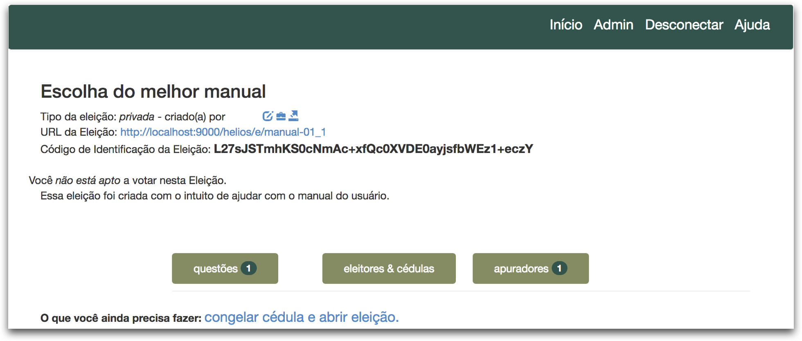
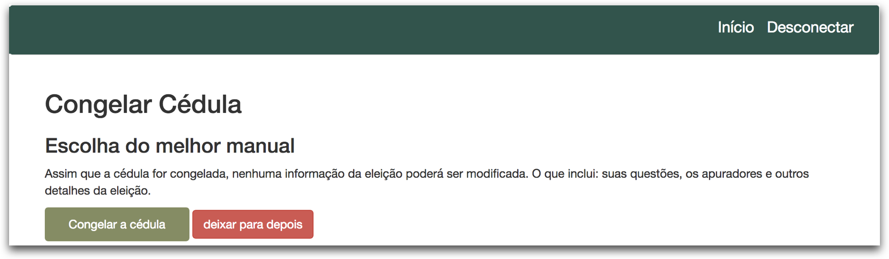
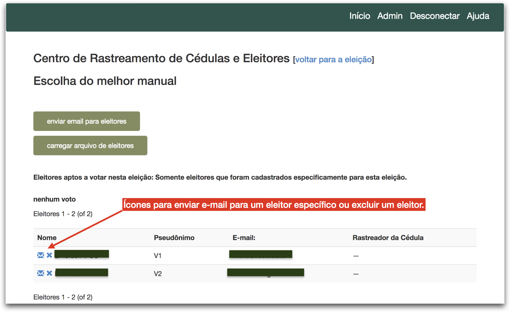
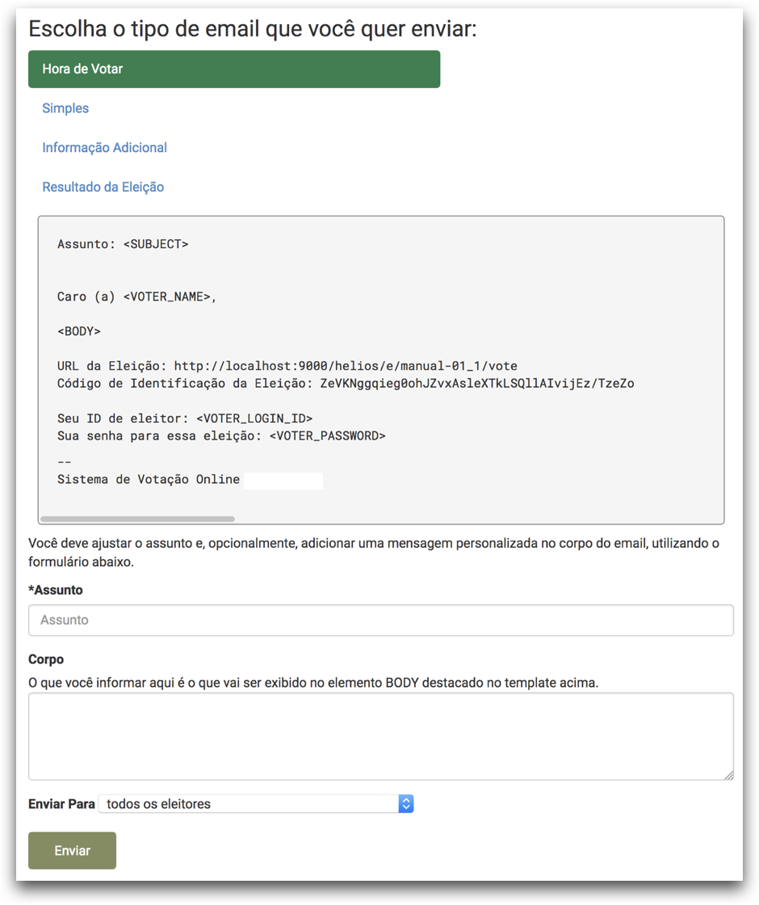

Como iniciar uma eleição
Congelando cédula e abrindo eleição
- Acesse o endereço http://votacao.ascemanacional.org.br, clique no menu Conectar e forneça seu nome de usuário e senha.
- Na lista que aparece no lado direito da tela, clique no link da eleição que deseja iniciar
-
Na página inicial da eleição, clique no link congelar cédula e abrir eleição.
- Se ao criar a eleição você especificou uma data e horário para o campo Votação começa em, então a eleição será aberta automaticamente somente após a data e horário especificado.
- Se ao criar a eleição você não especificou uma data e horário para o campo Votação começa em, então a eleição será aberta imediatamente. 
-
Se estiver certo que deseja abrir a eleição, clique no botão Congelar a cédula.
- Atenção: Após congelar a cédula não será possível alterar qualquer informação sobre a eleição, o que inclui suas questões, respostas, apuradores, etc. 
Disparando e-mail com as credenciais para os eleitores
Cada eleitor precisa receber por e-mail suas credenciais (login e senha) exclusivas para votar na referida eleição. É possível enviar e-mails em massa, ou seja, para todos os eleitores cadastrados, ou ainda, é possível enviar e-mail para um eleitor específico.
-
Na página inicial da eleição clique no botão Eleitores & cédulas.
-
Se deseja enviar e-mail em massa (para todos eleitores cadastrados), clique no botão Enviar e-mail para eleitores.
-
Se deseja enviar e-mail para um eleitor em específico, então clique no ícone do envelope azul que esteja na linha com o nome do eleitor para quem deseja enviar e-mail.
-
Se deseja adicionar novos eleitores, então clique no botão Carregar arquivo de eleitores.
-
Se deseja remover um eleitor em específico, então clique no ícone de um X azul que esteja na linha com o nome do eleitor que deseja excluir.

-
-
Escolha o tipo de e-mail Hora de votar
-
No campo Assunto informe o assunto do e-mail, por exemplo, "Eleição para escolha do conselho 2018 está aberta para votação"
- Opcionalmente, no campo Corpo, é possível incluir uma mensagem que aparecer no corpo do e-mail.
-
Na caixa de seleção Enviar Para é possível escolher se deseja enviar para:
- Todos os eleitores registrados; ou
- Somente para os eleitores que já depositaram uma cédula; ou
- Somente para os eleitores que não depositaram qualquer cédula; ou ainda
- Envio contingenciado - somente para os eleitores que ainda não receberam e-mail (X/Y)
- ATENÇÃO: Só use essa opção após consultar a equipe técnica de TI
- Essa opção permite o envio de pequenos lotes de e-mail, cujo tamanho foi definido em tempo de implantação (por padrão 1.000). Toda vez que essa opção for escolhida, serão enviados e-mails para os próximos 1.000 eleitores da lista.
- O valor X indica o total de eleitores que já recebeu e-mail desse modelo (tipo de e-mail).
- O valor Y indica o total de eleitores registrados para a eleição.
- Atenção: O administrador da eleição é o único responsável por garantir que todos os eleitores de uma eleição receberam o e-mail. Ou seja, o valor de X deverá ser igual ao valor de Y.
-
Clique no botão Enviar.
-
Pronto! Você será redirecionado para a página inicial da eleição.
